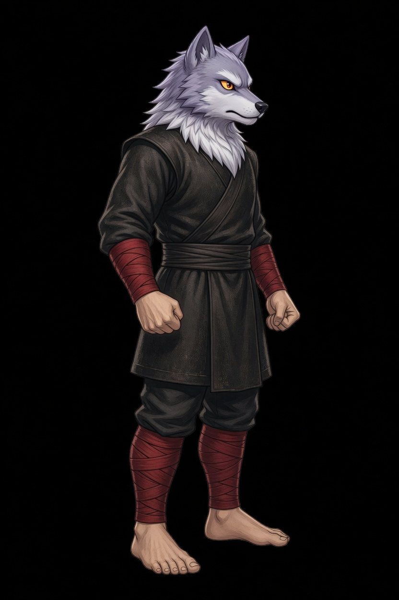
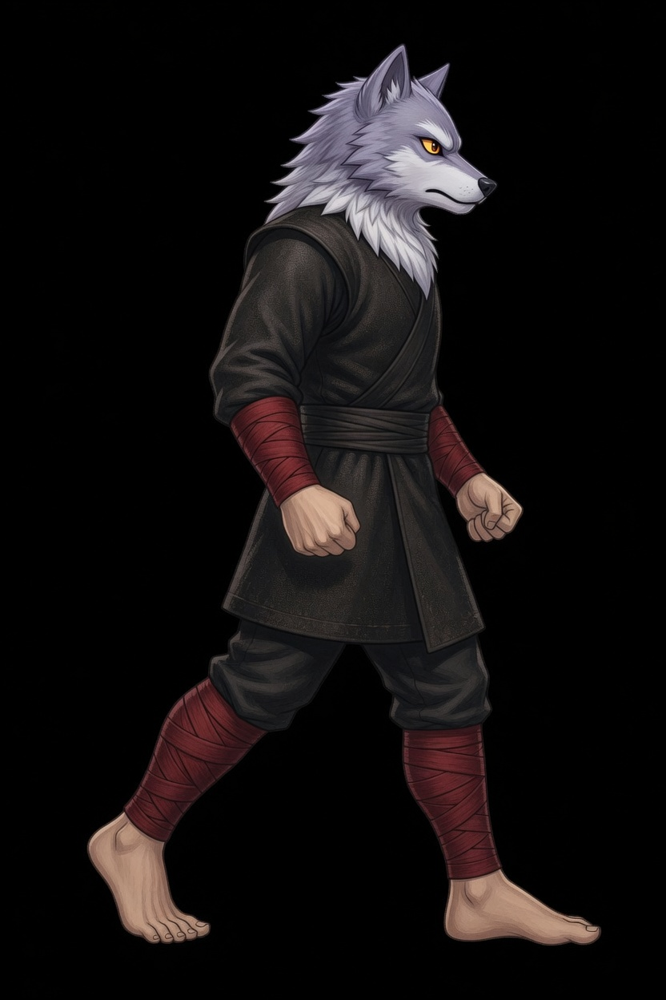
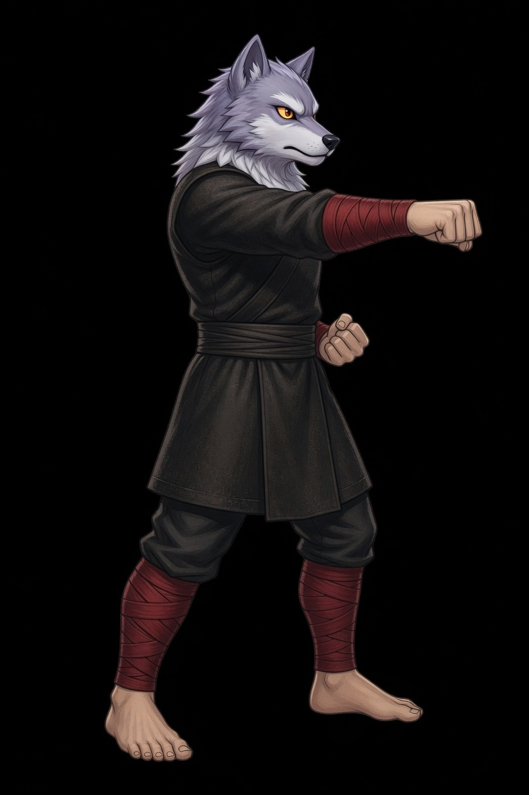
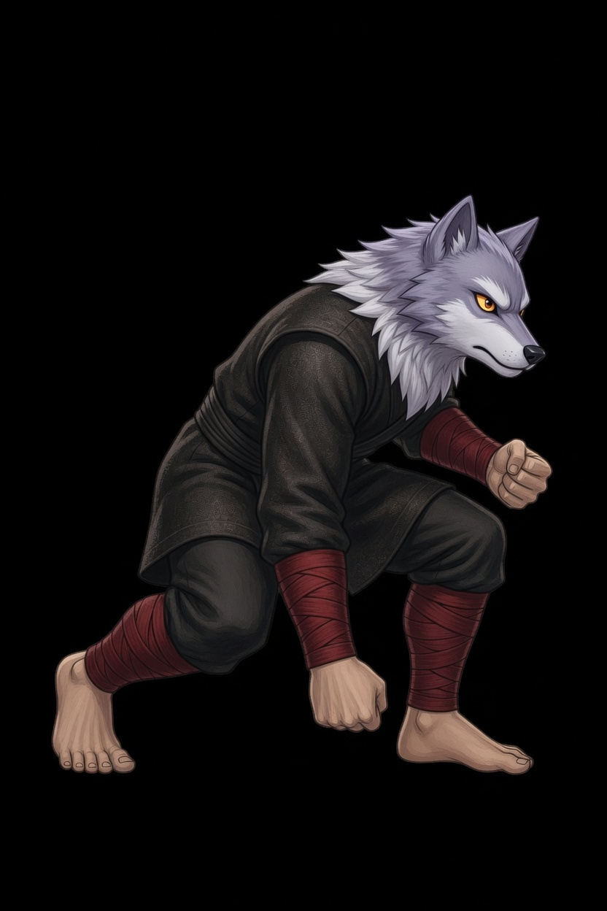
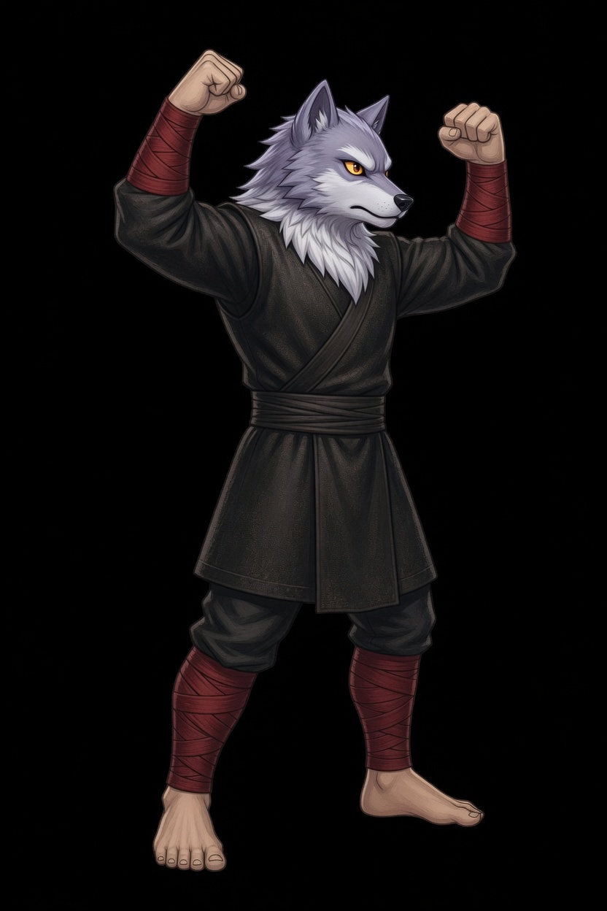
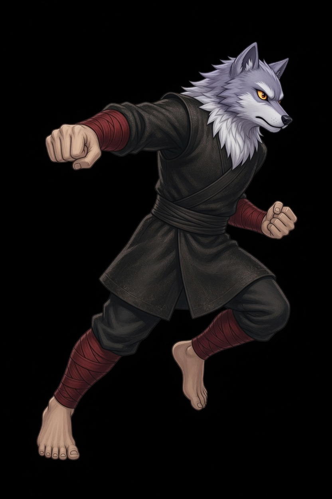
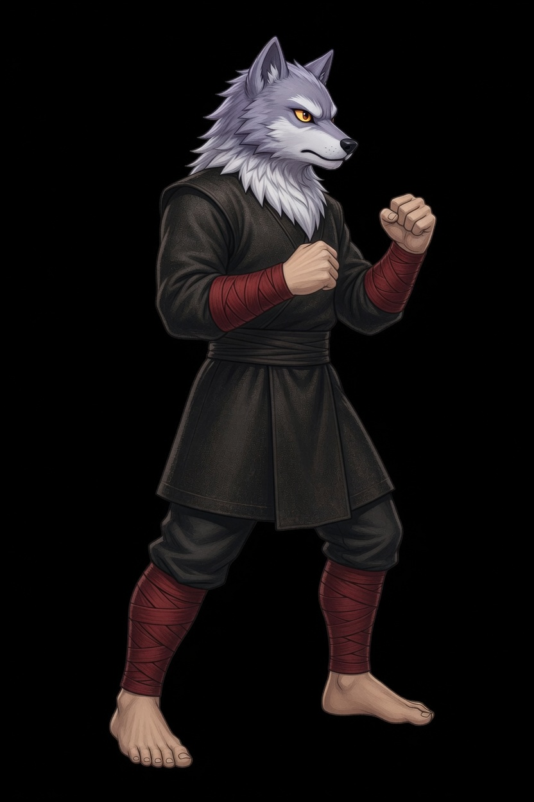
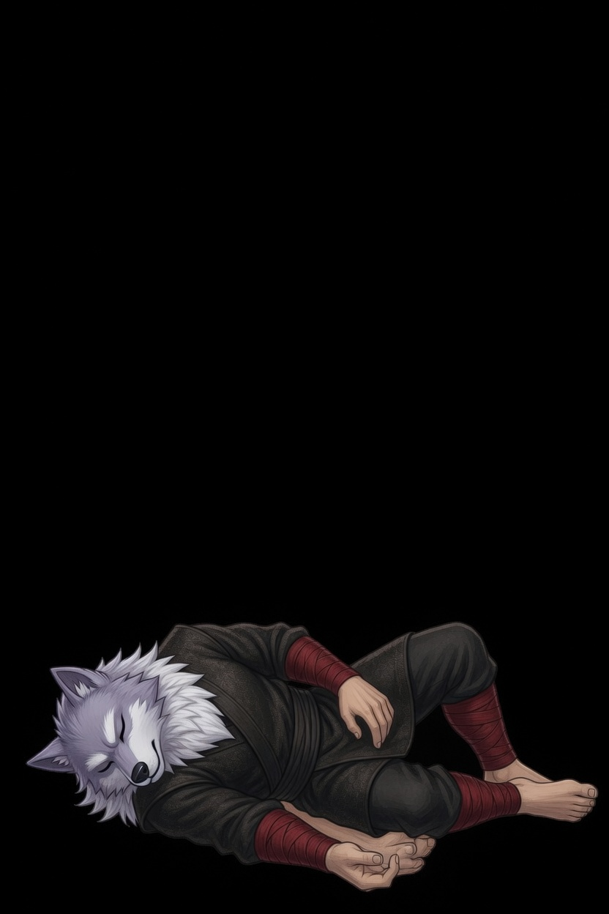
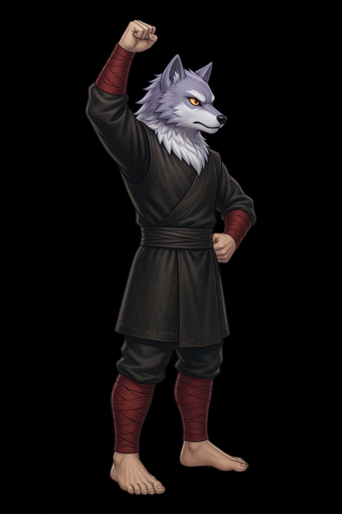

D9ra · Wolf Monk
This card is the only pose list. A later frame has to match one of these keys. Native facing is right. The whole sprite flips. Grey fur, amber eyes, white ruff, dark tunic, red wraps, bare fists, bare feet. D9ra is a fist, so the corner step is Close. There is no move named Dash.
| Book | Value |
|---|---|
| Basic | Wolf Fist · the leading fist · range 1.4 |
| Body | 830 health · 38 damage · 0.88 attacks/s · speed 3.8 · armor 5 · range 1.4 · mana 50 · regen 4 |
| Crit / cooldown | 0.24 crit · 0.88 cooldown scale |
| Cards | Fury Hour · Rift Edge · Drink the Cut |
| Moves | Shockwave · Wolf Fury · Squire's Charge |
| Stride | Close · she is a fist · 30s · cost 8 |
What stays off the body
- Shockwave's knock and stun are the ground ring. They are not painted on the body.
- Wolf Fury's rage and lifesteal stay off the sprite. The body only raises both fists.
- Squire's Charge is the book's blink. The arrival hit is not on this sprite. The body only lunges.
- Close's streak is the corner flash already drawn for a fist. It is not a second Dash.
Keys

Rest. Both feet planted, fists low. This frame opens Wolf Fist, Shockwave, Wolf Fury, Squire's Charge, and Close.

One stride. The right foot leads, the left foot reaches back, fists stay low. The fight clip is idle, then this stride. An opposite contact is not on this card, so do not copy this stride and call it the other step.

The leading arm punches straight out. The other fist stays at the hip. Both feet stay down. Frame 1 and frame 3 are idle.

Deep crouch, one fist at the floor, the other cocked. Frame 1 is idle. The ring is not on this sprite.

Both fists raised, mouth closed, feet planted. This is not the win. Frame 1 is idle.

The lunge. One fist leads, the body leans through. Frame 1 is idle. The blink flash is not on this sprite. The book name stays Squire's Charge.

The corner step. Front foot through, both fists up. Frame 2 is idle.

Down on one side, eyes closed. The clip holds this frame. The body is not scaled back up to standing height.

One fist raised, the other at the hip, both feet planted, mouth closed. This is not Wolf Fury and not Wolf Fist.